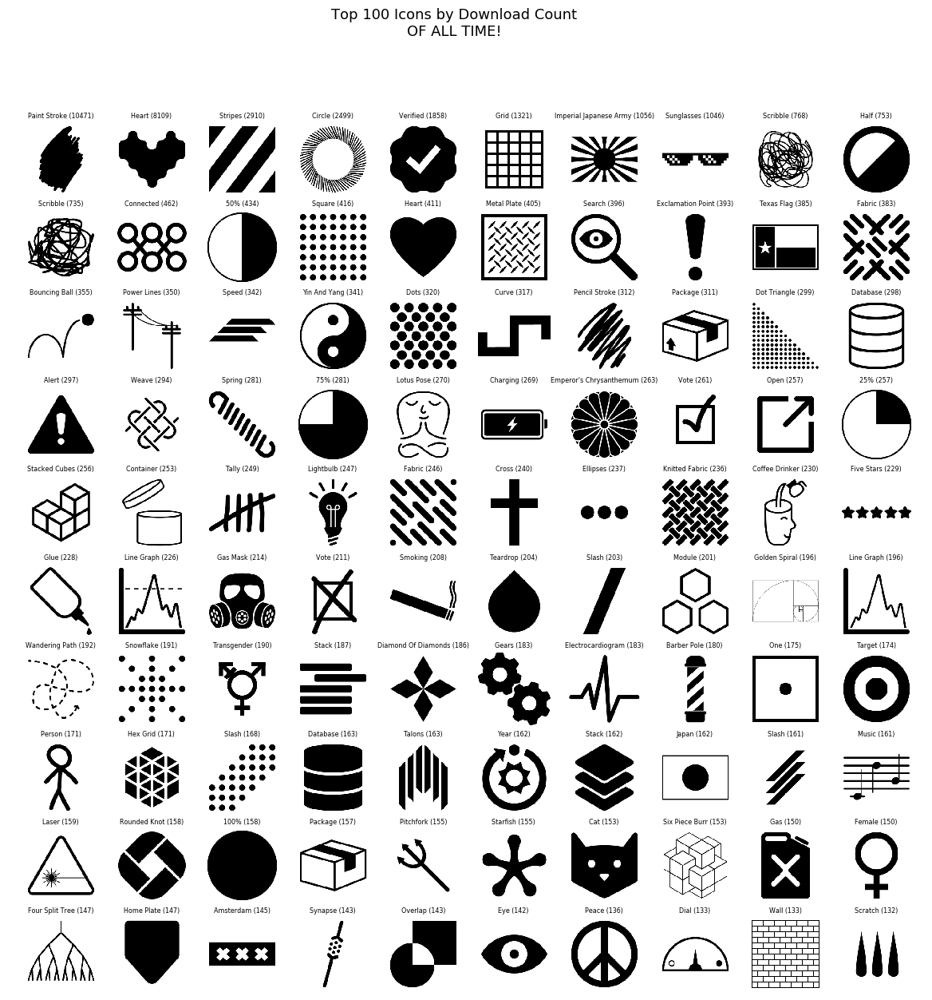

Top 100, 2018-2020
These are the hundred most-downloaded icons I have made (Aug 2018-Aug 2020).

Notes:
- The most popular icon is also one of the simplest: paint stroke. With over 10K downloads, it is by far my most downloaded icon.
- Most of the popular icons have very simple names (heart, gas, cat, search)
- A few popular ones I’m particularly proud of:
Thanks for two great years of icons. More to come…

Image Credits
Big list this time :black_heart:
- star medal by Zach Bogart from the Noun Project
- Paint Stroke by Zach Bogart from the Noun Project
- Heart by Zach Bogart from the Noun Project
- Stripes by Zach Bogart from the Noun Project
- Circle by Zach Bogart from the Noun Project
- Verified by Zach Bogart from the Noun Project
- Grid by Zach Bogart from the Noun Project
- Imperial Japanese Army by Zach Bogart from the Noun Project
- Sunglasses by Zach Bogart from the Noun Project
- Scribble by Zach Bogart from the Noun Project
- Half by Zach Bogart from the Noun Project
- Scribble by Zach Bogart from the Noun Project
- Connected by Zach Bogart from the Noun Project
- 50% by Zach Bogart from the Noun Project
- Square by Zach Bogart from the Noun Project
- Heart by Zach Bogart from the Noun Project
- Metal Plate by Zach Bogart from the Noun Project
- Search by Zach Bogart from the Noun Project
- Exclamation Point by Zach Bogart from the Noun Project
- Texas Flag by Zach Bogart from the Noun Project
- Fabric by Zach Bogart from the Noun Project
- Bouncing Ball by Zach Bogart from the Noun Project
- Power Lines by Zach Bogart from the Noun Project
- Speed by Zach Bogart from the Noun Project
- Yin And Yang by Zach Bogart from the Noun Project
- Dots by Zach Bogart from the Noun Project
- Curve by Zach Bogart from the Noun Project
- Pencil Stroke by Zach Bogart from the Noun Project
- Package by Zach Bogart from the Noun Project
- Dot Triangle by Zach Bogart from the Noun Project
- Database by Zach Bogart from the Noun Project
- Alert by Zach Bogart from the Noun Project
- Weave by Zach Bogart from the Noun Project
- Spring by Zach Bogart from the Noun Project
- 75% by Zach Bogart from the Noun Project
- Lotus Pose by Zach Bogart from the Noun Project
- Charging by Zach Bogart from the Noun Project
- Emperor’s Chrysanthemum by Zach Bogart from the Noun Project
- Vote by Zach Bogart from the Noun Project
- Open by Zach Bogart from the Noun Project
- 25% by Zach Bogart from the Noun Project
- Stacked Cubes by Zach Bogart from the Noun Project
- Container by Zach Bogart from the Noun Project
- Tally by Zach Bogart from the Noun Project
- Lightbulb by Zach Bogart from the Noun Project
- Fabric by Zach Bogart from the Noun Project
- Cross by Zach Bogart from the Noun Project
- Ellipses by Zach Bogart from the Noun Project
- Knitted Fabric by Zach Bogart from the Noun Project
- Coffee Drinker by Zach Bogart from the Noun Project
- Five Stars by Zach Bogart from the Noun Project
- Glue by Zach Bogart from the Noun Project
- Line Graph by Zach Bogart from the Noun Project
- Gas Mask by Zach Bogart from the Noun Project
- Vote by Zach Bogart from the Noun Project
- Smoking by Zach Bogart from the Noun Project
- Teardrop by Zach Bogart from the Noun Project
- Slash by Zach Bogart from the Noun Project
- Module by Zach Bogart from the Noun Project
- Golden Spiral by Zach Bogart from the Noun Project
- Line Graph by Zach Bogart from the Noun Project
- Wandering Path by Zach Bogart from the Noun Project
- Snowflake by Zach Bogart from the Noun Project
- Transgender by Zach Bogart from the Noun Project
- Stack by Zach Bogart from the Noun Project
- Diamond Of Diamonds by Zach Bogart from the Noun Project
- Gears by Zach Bogart from the Noun Project
- Electrocardiogram by Zach Bogart from the Noun Project
- Barber Pole by Zach Bogart from the Noun Project
- One by Zach Bogart from the Noun Project
- Target by Zach Bogart from the Noun Project
- Person by Zach Bogart from the Noun Project
- Hex Grid by Zach Bogart from the Noun Project
- Slash by Zach Bogart from the Noun Project
- Database by Zach Bogart from the Noun Project
- Talons by Zach Bogart from the Noun Project
- Year by Zach Bogart from the Noun Project
- Stack by Zach Bogart from the Noun Project
- Japan by Zach Bogart from the Noun Project
- Slash by Zach Bogart from the Noun Project
- Music by Zach Bogart from the Noun Project
- Laser by Zach Bogart from the Noun Project
- Rounded Knot by Zach Bogart from the Noun Project
- 100% by Zach Bogart from the Noun Project
- Package by Zach Bogart from the Noun Project
- Pitchfork by Zach Bogart from the Noun Project
- Starfish by Zach Bogart from the Noun Project
- Cat by Zach Bogart from the Noun Project
- Six Piece Burr by Zach Bogart from the Noun Project
- Gas by Zach Bogart from the Noun Project
- Female by Zach Bogart from the Noun Project
- Four Split Tree by Zach Bogart from the Noun Project
- Home Plate by Zach Bogart from the Noun Project
- Amsterdam by Zach Bogart from the Noun Project
- Synapse by Zach Bogart from the Noun Project
- Overlap by Zach Bogart from the Noun Project
- Eye by Zach Bogart from the Noun Project
- Peace by Zach Bogart from the Noun Project
- Dial by Zach Bogart from the Noun Project
- Wall by Zach Bogart from the Noun Project
- Scratch by Zach Bogart from the Noun Project